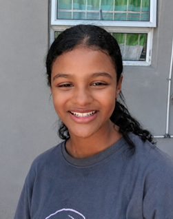

The Author
Young writer. Vivid imagination. Stories still unfolding.

Tiana Luck ✨
The Author
Young writer. Vivid imagination. Stories still unfolding.
Hi — I'm Tiana, and I've been making up stories for as long as I can remember. At 14, I've got one manuscript already in the world (Before Dawn), a head full of ideas for at least a dozen more, and a goal that I'm not shy about: I want to become a professional author.
I write across every genre I can get my hands on. Horror, fantasy, mystery, romance, contemporary — I don't believe writers should be locked into one box. Every genre teaches you something different about how stories work: horror teaches you atmosphere and dread; fantasy teaches you world-building; romance teaches you emotional stakes; mystery teaches you structure and the art of withholding information at just the right moment.
Before Dawn is my first serious long-form work, and it leans into supernatural horror and mystery. But it won't be the last thing I write, and it definitely won't be the last genre I write in. I have ideas for a YA fantasy, a romance, and a contemporary story that's been living in my notes for months. Writing isn't something I do sometimes — it's what I do.
Anime is a huge one. I know that sounds unexpected, but Attack on Titan's long-game plotting, Your Lie in April's earned heartbreak, and Demon Slayer's emotional gut-punches have taught me more about storytelling structure than almost anything else. When I watch a scene that destroys me emotionally, I immediately start asking: how did they do that?
Minecraft is another one, weirdly. I've been building worlds in Minecraft since I was a kid, and I only recently realised it was world-building practice all along. Every block you place has to mean something, has to connect to something else. Stories work the same way.
And books, obviously. Coraline taught me dread. The Hunger Games taught me pace. A Good Girl's Guide to Murder taught me structure. Percy Jackson taught me voice. Each one I read, I read like a writer — always asking what I can take from it.
It's a big one, but here it is:
Right now, I'm 14 and still in school. But I'm writing. Every chapter I finish is a step closer. Before Dawn is the beginning, not the finished thing.